Introducción a Python en Biología Molecular
Sebastian Bassi
sbassi@genesdititales.com

Presentacion: Introducción a Python en Biología Molecular by Sebastián Bassi is licensed under a Creative Commons Attribution-ShareAlike 2.5 Argentina License.
A lo mas grande...

Big Data
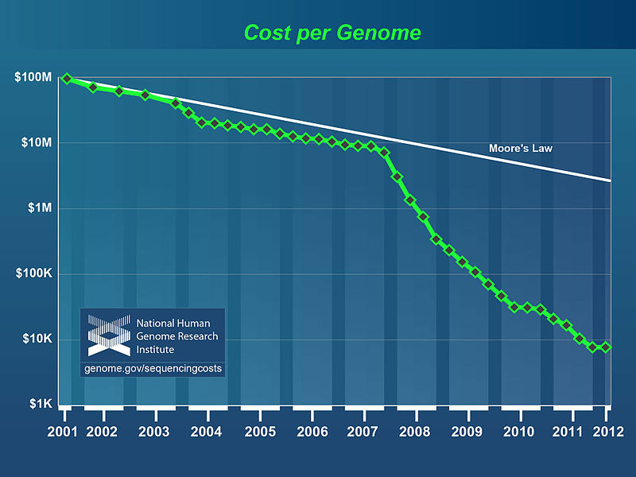
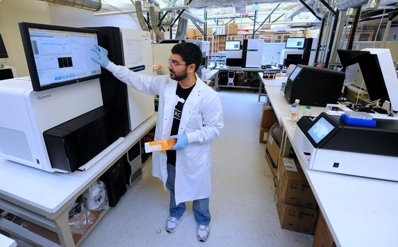
Mas información: DNA Sequencing Caught in Deluge of Data
Foto: The New York Times
Bioinformática: Desarrollo de métodos computacionales para resolver problemas derivados del almacenamiento, extracción, manipulación y distribución de información relativa a macromoléculas biológicas, típicamente ADN, ARN y proteínas.
Algunas tareas bioinformáticas
- Predicción de genes
- Montaje del genoma
- Predicción de estructura de proteínas
- Interacciones entre proteínas
- Relaciones evolutivas
Ventajas de Python para Bioinformática
- Manejo de texto y REGEX
- Modular
- Fácil de escribir
- Apto para aplicaciones web
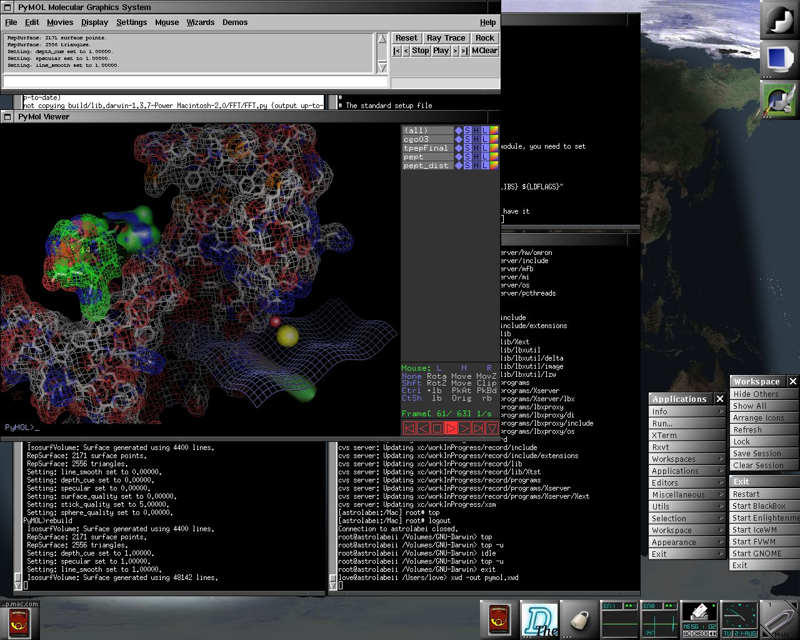
- Manipular secuencias
- BLAST
- Acceso a bases de datos online
- Herramientas CLI
- Clustering
- Filogenética
- Estructura proteica
- Genética de población
Contribuciones
- Tm function
- LCC function
- Two checksums function in Bio.SeqUtils.CheckSum
- SNPs parser (in progress)
- Feedback
- Bug reporting
- Testing (BLAST, SFF files, BioSQL)
- Documentation
Problema: Manipulación de secuencias en lote.
Herramienta: SeqRecord y SeqIO.
Problema: Filtrar contaminación de vectores.
Herramienta: SeqRecord, SeqIO, NCBIXML and NCBIStandalone.
Problema: Buscar primers.
Herramienta: Emboss.Applications.
Problema: Calcular temperatura de melting.
Herramienta: SeqUtils.
Problema: Introducir mutaciones con restricciones.
Herramienta: Restriction y Data.CodonTable.
Problema: Extraer información de un alineamiento.
Herramienta: Clustalw.MultipleAlignCL.
Problema: Obtener una matriz de sustitución de un alineamiento.
Herramienta: Align.AlignInfo y SubsMat.
Problema: Calcular linkage desiquilibrium.
Herramienta: PopGen.GenePop.
Problema: Persistencia de datos (en RDB).
Herramienta: BioSQL.
Problema: Extraer datos de Entrez.
Herramienta: Entrez.efetch.
Problema: Parsear datos de estructuras.
Herramienta: PDB.PDBParser.
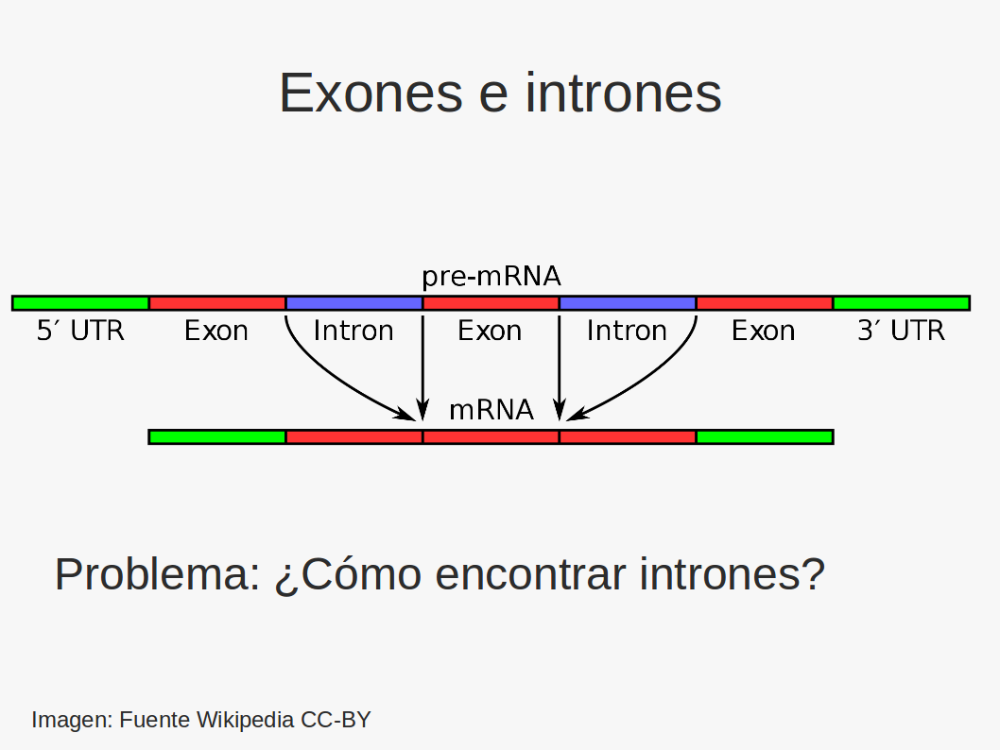
- Búsqueda por homología de secuencia en genoma de referencia (AT): NCBIStandalone y NCBIXML
- Persistencia de los resultados: MySQL o SQLite
- Alineamiento de 3 secuencias: target, AT mRNA y AT full length: Bio.Clustalw.MultipleAlignCL y Bio.Clustalw.do_alignmen
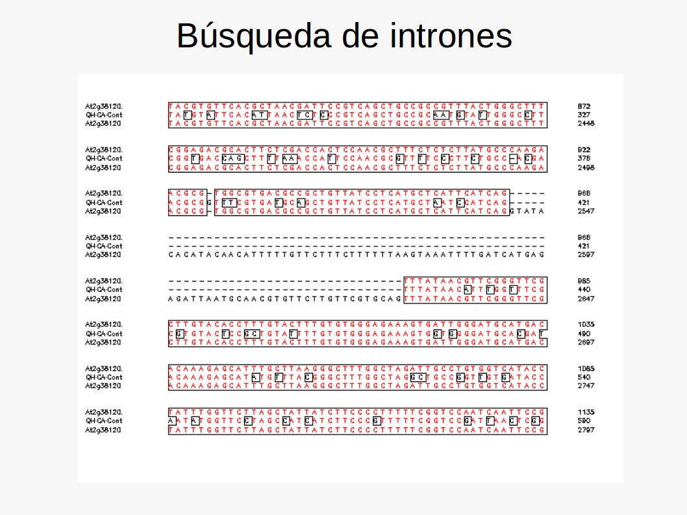
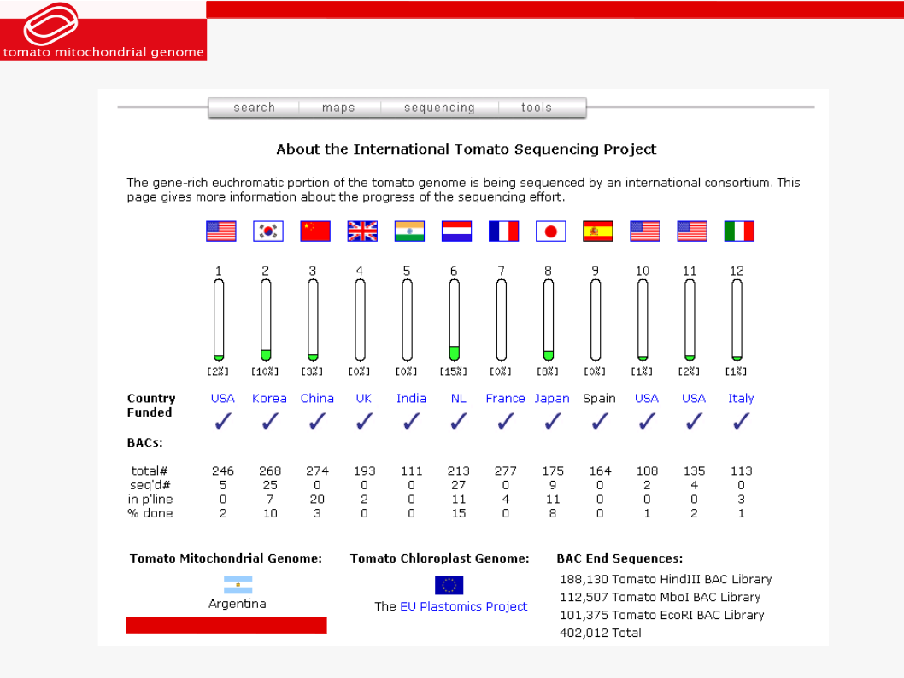
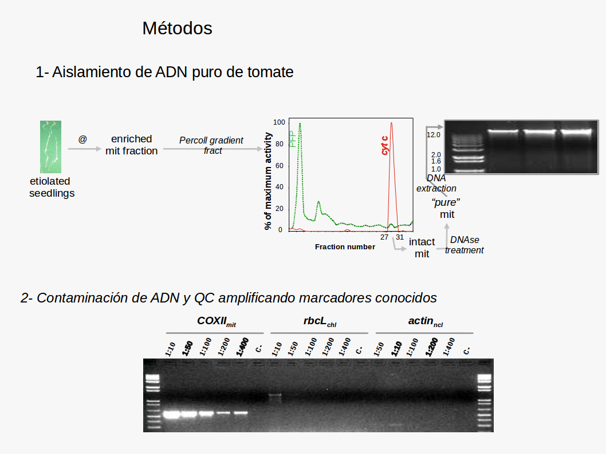
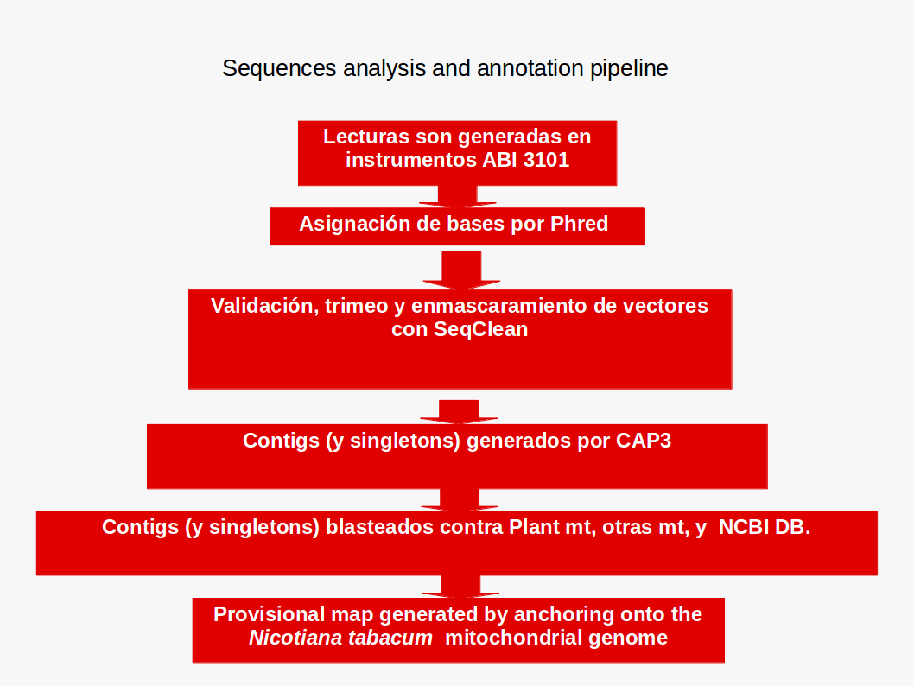
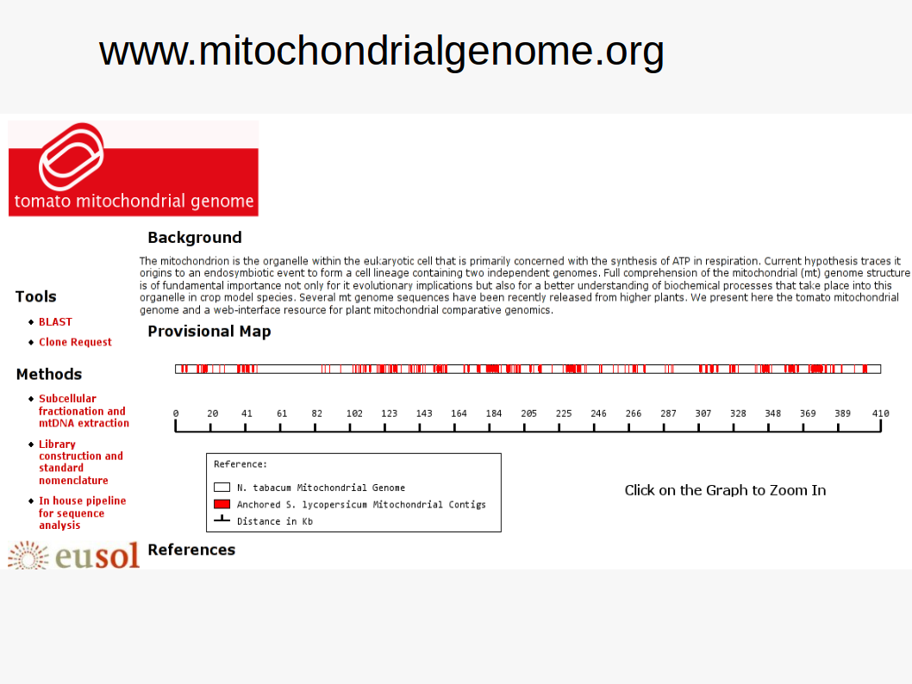
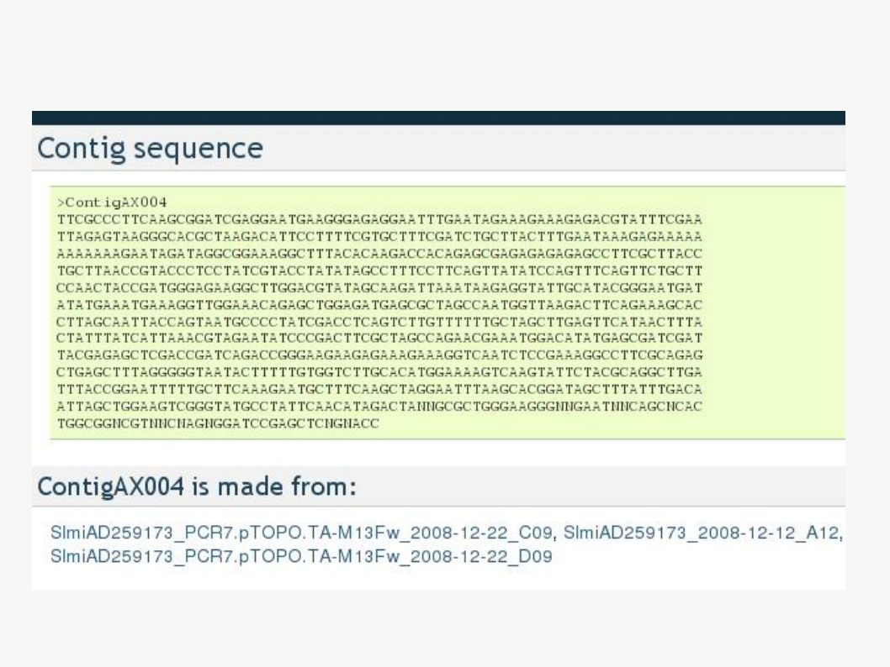
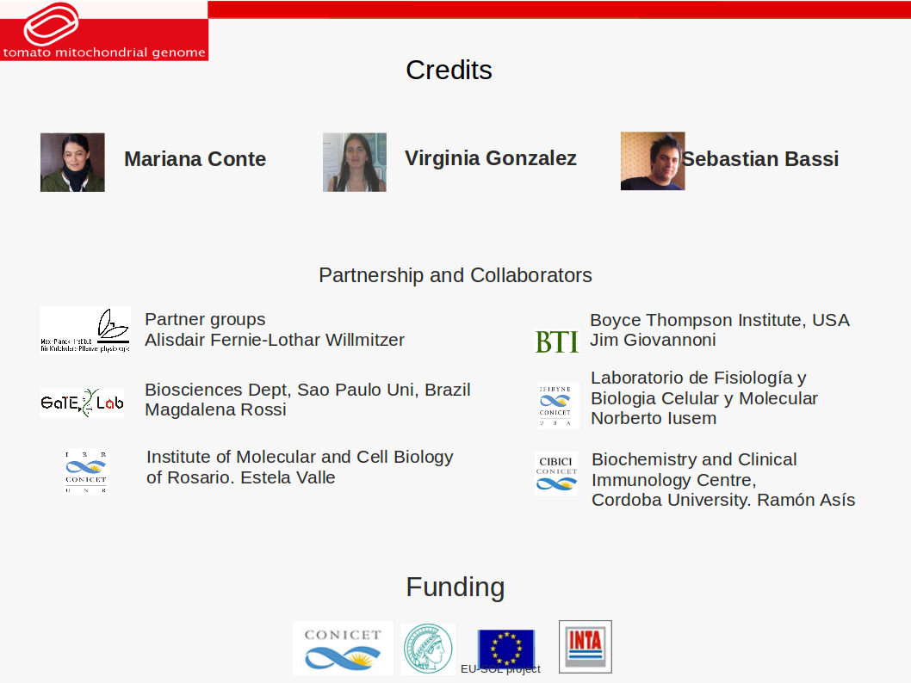
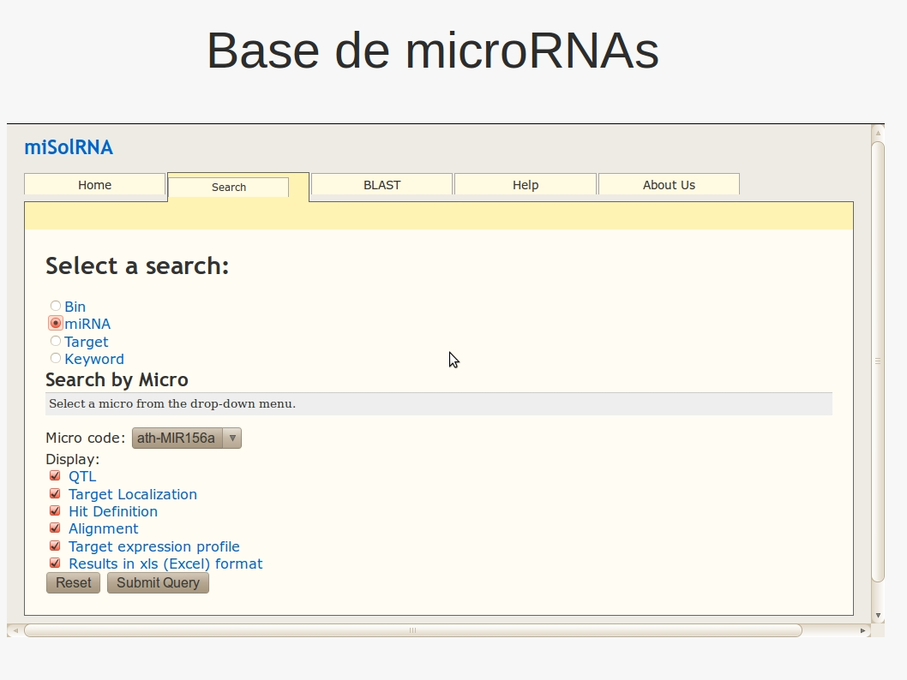
Clase secuencia
>>> from Bio.Seq import Seq
>>> from Bio.Alphabet import IUPAC
>>> seq = Seq('GATCGATGGGCCTATATA', IUPAC.unambiguous_dna)
>>> rna = seq.transcribe()
>>> str(rna)
'GAUCGAUGGGCCUAUAUA'
>>> rna.translate()
Seq('DRWAYI', IUPACProtein())
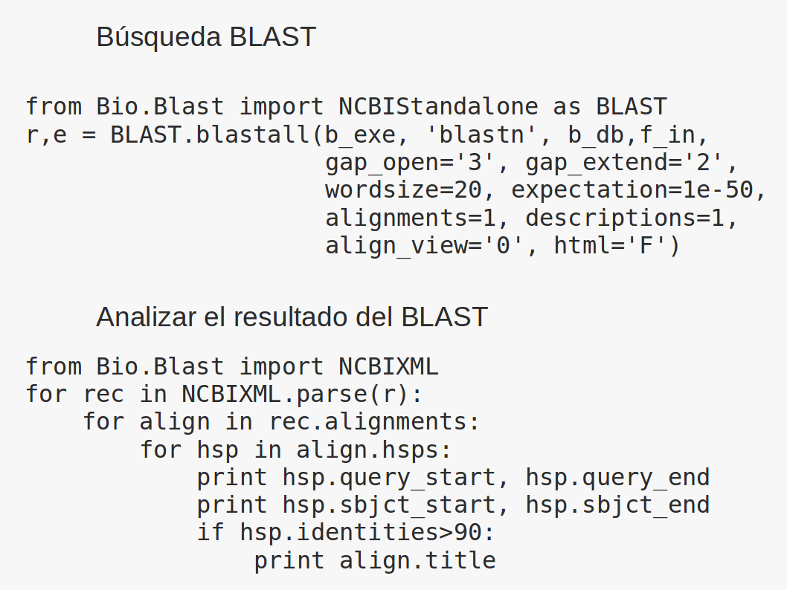
 Fuente: Wikipedia, Creative Commons Attribution-Share Alike 3.0. Attribution: Georges Biard
Fuente: Wikipedia, Creative Commons Attribution-Share Alike 3.0. Attribution: Georges Biard
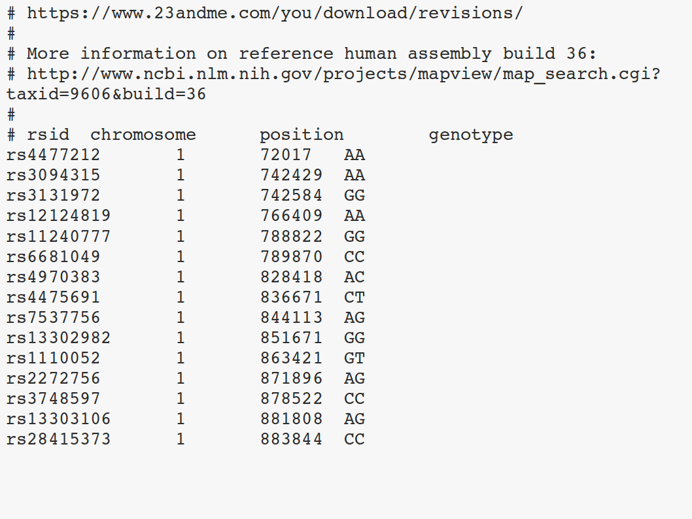
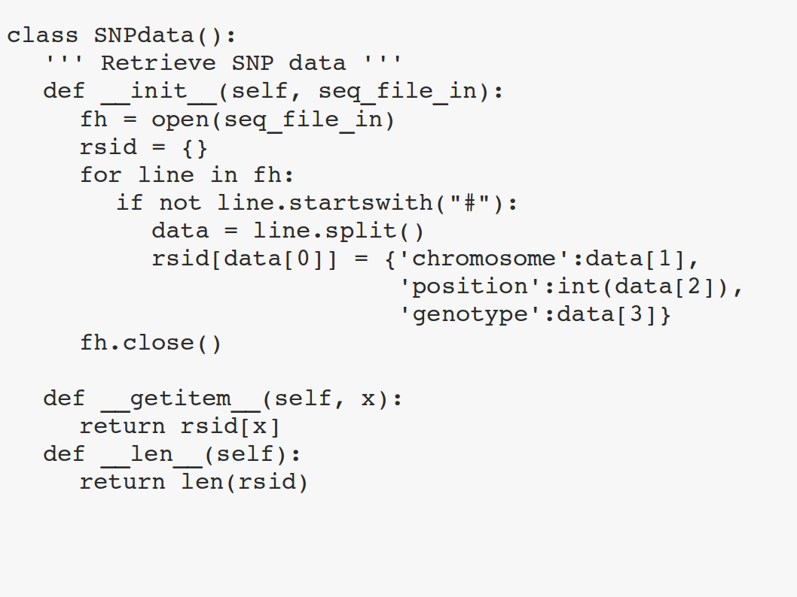
Recursos
Biopython: biopython.org
Documentación: biopython.org/wiki/Category:Wiki_Documentation
Cock PJ, et al. “Biopython: freely available Python tools for computational molecular biology and bioinformatics”. Bioinformatics 2009 Jun 1; 25(11) 1422-3. doi:10.1093/bioinformatics/btp163 pmid:19304878.
Bassi S (2007) A Primer on Python for Life Science Researchers. PLoS Comput Biol 3(11): e199. doi:10.1371/journal.pcbi.0030199
Book: “Python for Bioinformatics” http://tinyurl.com/biopython
Python en 8 clases: Aprendiendo a programar con Python (Spanish Edition)
Mailing list:
Users: http://lists.open-bio.org/mailman/listinfo/biopython/
Developers: http://lists.open-bio.org/mailman/listinfo/biopython-dev
Python en Argentina: python.org.ar
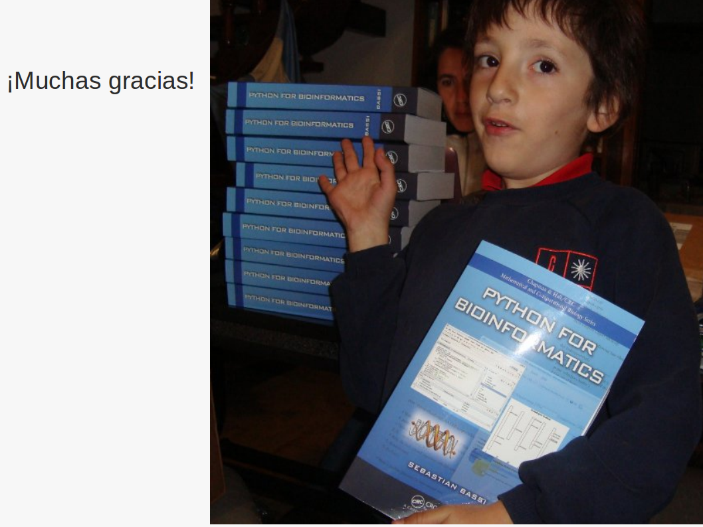